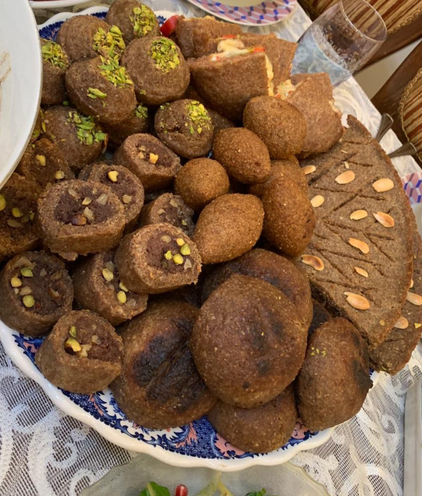

Kubbeh

Description
"Kubba Halab" or "Kubba't Halab" (used interchangeably) means "Kubba from Halab" (Halab is the Arabic word for Aleppo, which is a city in Syria). Kubba in general describes either flat, disc-shaped pies (both large and small) or football-shaped balls. Both types are filled with seasoned ground meat. Sometimes raisins, pinenuts, and almonds are also included in the filling.
Ingredients
For the pepper paste:
- (110 grams) dried sweet peppers
- 4 tablespoons olive oil
- Pinch of salt
For the spice mixture:
- (100 grams) cumin seeds
- (50 grams) dried marjoram
- (25 grams) cinnamon
- (25 grams) allspice peppercorns
- (25 grams) cloves
Steps
-
- Prepare the pepper paste:
- Remove the stems and seeds from the peppers and soak in a bowl of water for 2 hours. Strain, squeeze and grind in a food processor with the olive oil and salt to a paste. You can freeze the paste in small portions and thaw as needed.
-
- Prepare the spice mixture:
- Grind all the ingredients together. During the citrus season, add dried orange peel, grind and add about ½oz (15 grams) to the mixture.
-
- Prepare the dough:
- Soak the bulgur in 1 liter of lukewarm water and ¼ teaspoon of salt for at least 30 minutes. Drain and squeeze well with your hands — this is a crucial step.
- Pulse the ground lamb in a food processor into a smooth paste, working in small batches so as not to over-process the meat. Transfer the meat to a large tray, add the bulgur and mix to combine, working carefully. Take a little from each ingredient between two palms and slide them on top of each other. Repeat this step until the two ingredients turn to a homogeneous mass.
- Add the spices and pepper paste and mix using the same method. Taste and adjust the seasoning (if you are afraid to taste raw meat – fry a little and then taste it). Keep refrigerated until the filling is ready.
-
- Prepare the filling:
- Heat oil in a wide pan over a medium heat. Add the onion and fry until golden. Add the ground lamb shank, increase the heat and fry until the meat changes its color, about 3 minutes. Stir occasionally and crumble with a wooden spoon. Add the baharat and salt, stir for 1 minute and remove from the heat. Drain, add the pine nuts, and mix to combine.
-
- Assemble the kibbeh:
- Take a ping pong ball sized piece of dough (about 1.4 oz / 40 grams) and roll. Moisten the hand holding the ball and the opposite hand’s index finger with water and press it inside the ball. Using circular motions, rotate the ball while the finger hollows it out, gently enlarging it while keeping a thin outer layer. The hand that holds the ball naturally closes and cups the mixture, creating resistance as the thumb curves and forms the tip of the kibbeh.
- When the sides of the casing are a thickness of 1/4 in (5mm), fill with about 1 teaspoon of filling. Press tightly and close the casing over the filling. Shape the rounded end to a pointy tip using a circular motion and place on a tray. Repeat with the remaining dough and filling. Allow to dry for about 15 minutes. It is more than likely that in the first few attempts you will have some filling left, this has to do with the skillful art of kibbeh making, which will improve in time.
- At this stage you can freeze the kibbeh for future use (fry directly from the freezer, watching out for spattering oil). Otherwise, to fry the kibbeh: Heat oil for deep frying. Fry the kibbeh in batches, 4-5 at a time, until golden brown, about 3 minutes. Transfer to a paper towel and serve hot.
Return to Homepage